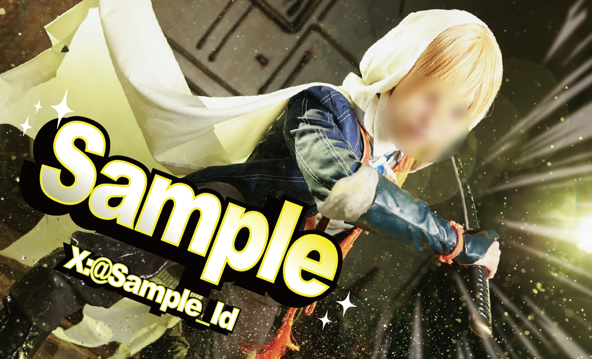
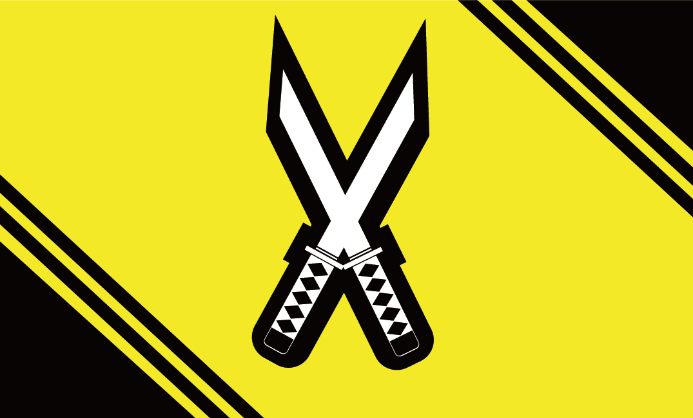

イベントなどで交流する際に配るためのコスプレ用名刺を制作しました。
使用技術
Illustrator
デザインについて
動きのある構図だったので、全体的に斜めのデザインにしました。また、キャラクターのイメージカラーをアクセントカラーとして入れました。
少年ジャンプをイメージして、迫力のあるデザインにしました。また、キャラクターを引き立てるために集中線を入れることでキャラクターを引き立てつつよりジャンプっぽさが出るようにしました。
裏面は、キャラクターのイメージカラーをベースに刀を配置し、キャラクターっぽさと統一感を出しました。あえてあまりオブジェクトを配置することで、表面の迫力のあるデザインと対比させ、シンプルなデザインにしました。